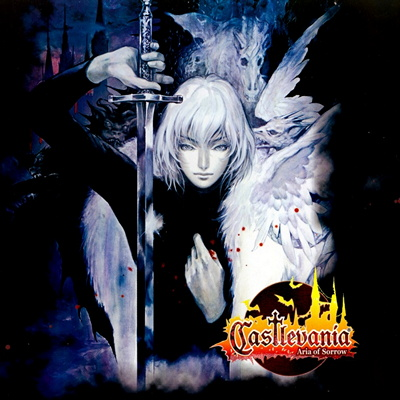
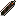
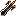
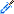
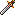
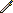
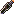

Aria Of Sorrow

Aria Of Sorrow
Castlevania: Aria of Sorrow é um jogo de ação e exploração lançado em 2003 para o Game Boy Advance. Este título se destaca por sua ambientação futurista e pela introdução do sistema "Tactical Soul", que permite ao jogador absorver as habilidades dos inimigos derrotados. Você controla Soma Cruz, um jovem que descobre estar ligado ao poder de Drácula enquanto explora um castelo sombrio repleto de mistérios. Com jogabilidade envolvente, gráficos detalhados e uma trilha sonora cativante, Aria of Sorrow é considerado um dos melhores títulos da série Castlevania e um clássico do gênero "Metroidvania".
Magias Presentes No Jogo
| IMG | NOME | MAGIA |
|---|---|---|
|  | Ascalon | Espada dos caçadores de dragão |
|  | Balmung | Espada mágica lendária |
|  | Claymore | Espada espiritual encantada |
|  | Durandal | Espada dos grandes cavaleiros |
|  | Final Sword | Uma espada para o final |
|  | Gladius | IEspada dos grandes gladiadores |